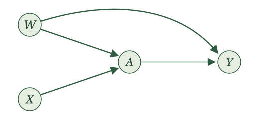
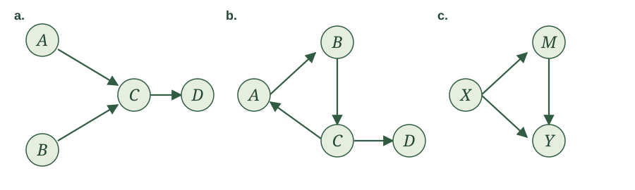
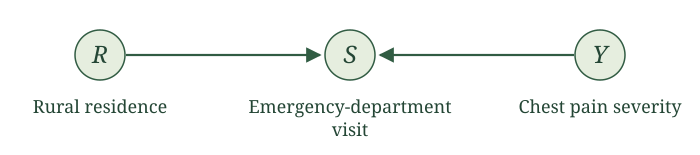
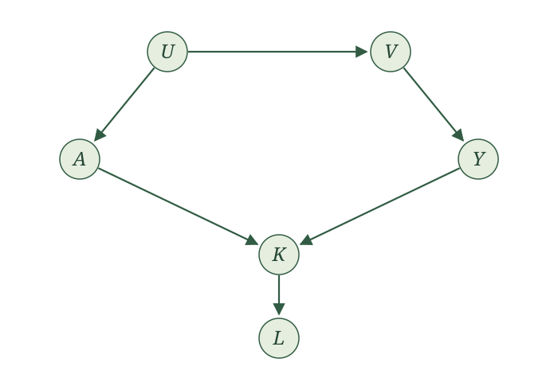
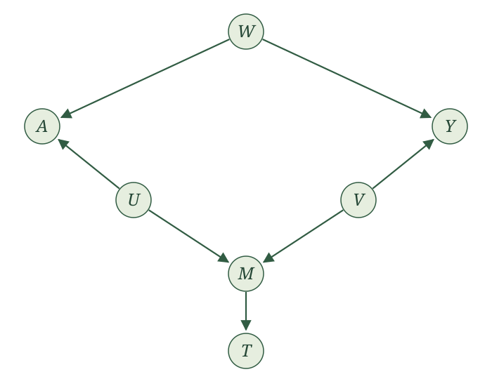
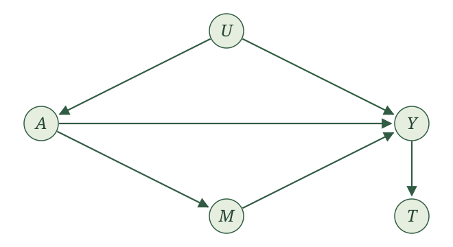
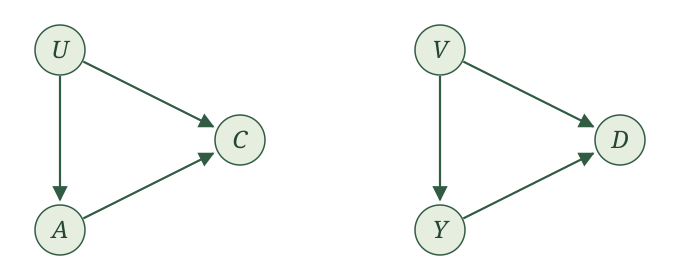

Exercises
A list of assignments
1. Telling a story
A study records three variables for each patient.
- Whether the patient has severe symptoms upon arriving at an emergency department
- Whether the patient receives diagnostic imaging
- Whether the patient is admitted to the hospital
Tell a story for how the world might generate these three variables. Write your story as a list. At each step, say which variable is generated and which other variables, if any, are used to generate it.
2. Generating one observation
Suppose the variables in the emergency-department study are generated according to the assignments
\[ X\leftarrow\operatorname{Bernoulli}(0.30), \]
\[ A\leftarrow\operatorname{Bernoulli}(0.15+0.65X), \]
\[ Y\leftarrow\operatorname{Bernoulli}(0.05+0.35X+0.15A). \]
Here, \(X\) indicates severe symptoms, \(A\) indicates diagnostic imaging, and \(Y\) indicates hospital admission. Write code that carries out these assignments and generates one observation \((X,A,Y)\). You may use R or another programming language. Explain why the lines of code must be run in the order you chose.
3. Finding topological orders
For each collection of assignments, find a topological order if one exists and determine whether it is unique. The order in which the assignments are displayed is not intended to be an order for generating the variables.
\[ Y\leftarrow\operatorname{Normal}(90+3X+2A,16), \]
\[ W\leftarrow\operatorname{Poisson}(3), \]
\[ A\leftarrow\operatorname{Binomial}\{4,\operatorname{logit}^{-1}(-1+0.2X+0.3W)\}, \]
\[ X\leftarrow\operatorname{Exponential}(1). \]
\[ A\leftarrow\operatorname{Poisson}\{\exp(0.1X+0.2W)\}, \]
\[ X\leftarrow\operatorname{Normal}(Y,1), \]
\[ W\leftarrow\operatorname{Bernoulli}(0.4), \]
\[ Y\leftarrow\operatorname{Normal}(5+A,4). \]
\[ W\leftarrow\operatorname{Normal}(2+X,1), \]
\[ Y\leftarrow\operatorname{Normal}(10+W+A,9), \]
\[ A\leftarrow\operatorname{Poisson}\{\exp(0.1W)\}, \]
\[ X\leftarrow\operatorname{Bernoulli}(0.5). \]
4. Decomposing a joint probability
Suppose \(X\) indicates whether a patient has severe asthma at baseline, \(Z\) indicates whether the patient’s insurance covers a controller medication, \(A\) indicates whether the patient uses the controller medication, and \(Y\) is the number of asthma exacerbations during the following year. Consider the assignments
\[ X\leftarrow\operatorname{Bernoulli}(0.5), \]
\[ Z\leftarrow\operatorname{Bernoulli}(0.4), \]
\[ A\leftarrow\operatorname{Bernoulli}(0.2+0.2X+0.2Z), \]
\[ Y\leftarrow\operatorname{Poisson}(2+X-A). \]
- Use the assignments to find
\[ E[A\mid X,Z] \]
and
\[ E[Y\mid X,A]. \]
- Use the assignments to decompose
\[ P(X=x,Z=z,A=a,Y=y). \]
For each factor, explain how the corresponding assignment tells you which variables belong after the conditioning bar.
- Use your decomposition to calculate
\[ P(X=1,Z=0,A=1,Y=2). \]
Structural causal models
5. Writing structural causal models
For each story, write an SCM, state the parents of each variable, and state what must be true of the noise terms.
a. Wildfire smoke. Let \(X\) indicate unhealthy wildfire smoke, let \(A\) indicate whether a person stays indoors, and let \(Y\) indicate an asthma exacerbation. Staying indoors may depend on the smoke, and the outcome may depend on both the smoke and staying indoors.
b. Appointment-reminder trial. Suppose investigators randomly assign patients to receive an appointment reminder. Let \(X\) collect baseline characteristics, let \(A\) indicate randomized assignment to the reminder, let \(M\) indicate whether the patient attends the appointment, and let \(Y\) indicate whether blood pressure is measured at that appointment. Baseline characteristics may affect attendance and whether blood pressure is measured. The reminder may affect attendance. In this story, the reminder can affect whether blood pressure is measured only through attendance.
6. Using the local Markov property
Return to the wildfire-smoke and appointment-reminder SCMs. For each statement, determine whether we can use the local Markov property to conclude that it holds under the specified SCM. If we can, explain why and interpret the statement in context. If we cannot, explain why the local Markov property does not give us the statement.
- In the wildfire-smoke SCM,
\[ A\mathrel{\perp\!\!\!\perp}X. \]
- In the appointment-reminder SCM,
\[ A\mathrel{\perp\!\!\!\perp}X. \]
- In the appointment-reminder SCM,
\[ M\mathrel{\perp\!\!\!\perp}A. \]
- In the appointment-reminder SCM,
\[ Y\mathrel{\perp\!\!\!\perp}A\mid X,M. \]
7. Where might these SCMs be wrong?
Return to the SCMs you wrote for the wildfire-smoke story and the appointment-reminder trial. We emphasized two ways that an SCM can be wrong.
- The assignment function for a variable may be missing an important parent.
- The noise variables may not be independent because some shared input is hiding inside more than one of them.
For each story, give one concrete example of each problem. Be as specific as possible about the variable involved, which assignments would use it, and how you would revise the SCM.
a. Wildfire-smoke SCM
b. Appointment-reminder SCM
8. Following an SCM for one realization
Consider the SCM
\[ X\leftarrow\epsilon_X, \]
\[ A\leftarrow \begin{cases} 1, & \epsilon_A\leq 0.25+0.5X,\\ 0, & \epsilon_A>0.25+0.5X, \end{cases} \]
and
\[ Y\leftarrow X+2A+\epsilon_Y. \]
Suppose the noise variables have the realized values
\[ \epsilon_X=0.2, \qquad \epsilon_A=0.3, \qquad \epsilon_Y=0.4. \]
Follow the assignments in order. What values are placed into \(X\), \(A\), and \(Y\)?
Using the same values of \(X\) and \(\epsilon_Y\), define two new random variables
\[ Y_1=X+2(1)+\epsilon_Y \]
and
\[ Y_0=X+2(0)+\epsilon_Y. \]
What values do \(Y_1\) and \(Y_0\) take for this realization?
- Compare \(Y\), \(Y_1\), and \(Y_0\). Which of the two new variables equals \(Y\)? Why? What is the difference \(Y_1-Y_0\)?
Causal graphs
9. Building a graph from an SCM
Consider the SCM
\[ \begin{aligned} W&\leftarrow f_W(\epsilon_W),\\ X&\leftarrow f_X(\epsilon_X),\\ A&\leftarrow f_A(W,X,\epsilon_A),\\ M&\leftarrow f_M(W,A,\epsilon_M),\\ Y&\leftarrow f_Y(X,M,\epsilon_Y), \end{aligned} \]
where the noise terms are independent.
Draw the causal graph.
List the parents of every variable.
10. Recovering an SCM from a graph
Consider the following causal graph.

List the parents of every variable.
Write the SCM represented by the graph.
State what must be true of the noise terms.
11. Cycles and topological orders
For each graph, determine whether the corresponding SCM has a topological order. If it does, give one. If it does not, identify a directed cycle.

12. Using the graph for conditional independence
Return to the graph from Exercise 9 and use the topological order
\[ W,X,A,M,Y. \]
For each variable, identify the variables that appear earlier in the order but are not its parents.
Use the local Markov property to list every nontrivial conditional-independence statement supplied by this order.
Does the local Markov property tell us whether \(A\) and \(X\) are dependent? Does it tell us whether \(Y\) and \(W\) are conditionally dependent given \(X\)? Explain.
Global Markov property
13. Chest pain in the emergency department
Consider this made-up example. Among people experiencing chest pain in a region, rural residence and chest pain severity are independent. Let \(R\) indicate rural residence, \(Y\) denote chest pain severity before deciding whether to seek care, and \(S\) indicate whether a person visits the emergency department.
People living in rural areas face a longer journey to the emergency department and may stay home when symptoms are mild. More severe chest pain makes a visit more likely. These relationships are represented by the following graph:

A researcher examines only emergency-department patients and finds that rural patients tend to have more severe chest pain. Explain how this association could arise even though rural residence and chest pain severity are independent in the regional population. Identify the variable being conditioned on and its role in the graph.
14. Listing and classifying paths
Consider the following causal graph.

List every path between \(A\) and \(Y\).
For each path, state whether it is open or blocked when conditioning on nothing, on \(V\), and on \(V,L\). Identify the node responsible whenever a path is blocked.
15. Blocking individual paths
For each drawing, list all conditioning sets chosen from the displayed variables other than \(A,Y\) that block the specified path from \(A\) to \(Y\). Include the empty set if it works. Each drawing shows all relevant arrows.
\(A\leftarrow U\to V\to Y\).
\(A\to U\leftarrow V\leftarrow Y\).
\(A\to U\to V\leftarrow Y\), with the additional arrow \(V\to Z\). Study the path through \(U,V\); \(Z\) is not on it.
16. Finding d-separating sets
Return to the graph in Exercise 14. Choose conditioning variables only from \(U,V,K,L\).
Find two different conditioning sets that d-separate \(A\) and \(Y\). For each set, explain why every path is blocked.
Can a conditioning set containing \(K\) or \(L\) d-separate \(A\) and \(Y\)? Explain.
17. Applying the global Markov property
Suppose the graph in Exercise 14 comes from an SCM with a topological order.
Use your d-separation conclusions to state two conditional-independence relationships between \(A\) and \(Y\) guaranteed by the global Markov property.
Does the global Markov property guarantee \(A\perp Y\mid V,L\)? If not, does it establish that \(A\) and \(Y\) are conditionally dependent given \(V,L\)? Explain.
18. Conditioning on a variable measured before exposure
Consider the following causal graph. The variables \(W,U,V,M,T\) are measured before exposure \(A\). Suppose the graph comes from an SCM with a topological order.

List every path between \(A\) and \(Y\). Does \(W\) d-separate them? State the corresponding conclusion from the global Markov property.
Does \(W,M\) d-separate \(A\) and \(Y\)? What about \(W,T\)? Explain what changes on each path.
A researcher argues that adding \(M\) to the conditioning collection is harmless because it was measured before \(A\). What does this graph tell us about that argument?
19. Can every path be blocked?
Consider the following causal graph from an SCM with a topological order.

List every path between \(A\) and \(Y\). Which remain open conditional on \(U,M\)?
Can any collection chosen from \(U,M,T\) d-separate \(A\) and \(Y\)? Explain. Does your answer establish that \(A\) and \(Y\) are dependent?
20. Disconnected parts of a graph
Consider the following causal graph from an SCM with a topological order.

Are \(A\) and \(Y\) d-separated without conditioning? What does the global Markov property imply?
Are \(A\) and \(Y\) d-separated by \(C,D\)? Explain why conditioning on these colliders does or does not change your answer.
Does every collection chosen from \(U,V,C,D\) d-separate \(A\) and \(Y\)? Explain and state the general observation this illustrates.